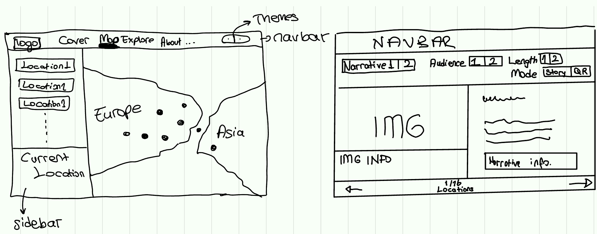
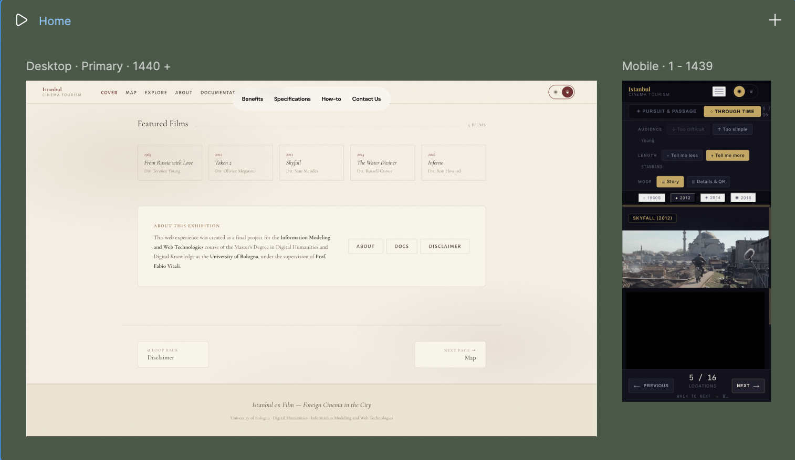

Design Documentation
This page explains, in plain English, every choice behind the site: where I asked an LLM for help, the pre-design sketches, the use cases the interface had to serve, the design decisions (aspect ratios, orientations, dimensions, resolutions, layout grids, page layouts), the typography, the code structure, and the metadata model. Each section is written so that the reasoning behind a specific number or rule on the site can be found here.
01
I used an LLM (Anthropic's Claude, accessed through Claude Code) as a coding assistant. All research, writing, design decisions, sketches and metadata curation are my own. The LLM was used only for the specific technical tasks listed below.
App module in
js/app.js that reads and writes
localStorage and fires
CustomEvents so each page can react.
js/map.js: tile layer, marker creation,
popup HTML, click handler.
js/app.js that
sets data-theme on <html>
before the rest of the script runs.
nudgeVariantHarder() and
nudgeVariantEasier() helpers that move
along the VARIANT_ORDER array in
js/app.js.
<head>.
generateLocationQR() in
js/app.js.
clamp() on every heading) and the
mobile breakpoints (900 px, 720 px,
640 px) were drafted by me as a list of intended
behaviours; the LLM produced the final media-query
syntax.
What the LLM did NOT do: pick the topic, write the narrative texts, choose the locations, take or select the photographs, pick the colour palettes, design the typography pairing, draw the layout sketches, or assign the metadata vocabularies. Those are mine.
02
Before any code was written, I designed the interface on paper and in Figma. I started with rough hand-drawn sketches to test the overall information flow (which page leads to which, what each page must contain) and then moved to Figma to refine the page layouts at real screen sizes.
Hand-drawn sketches. The sketches fixed the position of the navigation bar (top, fixed), the layout of each page (one column / two columns / sidebar + canvas), and the order of elements. The Explore page went through three sketch versions before I settled on the "image left / narrative right" split with a fixed-height image area on top of a gallery and an info panel.

Figma frames. After the sketches I built the pages in Figma at 1440 × 900 (desktop reference) and at 375 × 812 (phone reference). The Figma file was the place where I tested the colour palette against real type, locked the spacing scale (4 → 96 px) and decided which elements had to flip between the two themes (image side, hero alignment, ornamental rules, background).

The HTML/CSS implementation follows these sketches and Figma frames closely. Where the live site differs (for example, the variant toolbar grew an extra row), the change happened during testing because the original layout did not have enough horizontal room on a tablet.
03
The site follows five rules:
localStorage.Use cases
The site was designed around two real visitor types. Each walkthrough below shows a real click-path through the site, and uses only features that are already there: the Audience tool (which sets the text level to Young, Adult, or Scholar), the Length tool (Brief, Standard, or Full), the Mode switch (Story or Details & QR), the camera details (Facing, Elevation, Focal Length, Shot Type, plus a short note), the image gallery with two tabs (Real Location and Film Still), the QR code, the GPS coordinates, and the two narratives.
◇ Persona 1 — Dilek
High-school teacher, Ankara. She has just shown her class Skyfall and The Water Diviner, and she is planning a four-day school trip to Istanbul. She wants the trip to mix normal monuments with film places her class already knows. She also needs short, simple texts that she can print or read out loud at each stop.
Goal: build a teaching plan for sixteen places. Each place needs a short story that fits a sixteen-year-old reader, and a travel time that fits a school day.
Page flow on this site:
Site features used: Through Time narrative · Audience tool set to Young · Length set to Brief · Story mode · map with sixteen pins · visit duration and recommended time of day.
◈ Persona 2 — Bruno & Beatrix
Cinema-tourism couple, Brussels. Every time they watch a film about a city they can fly to, they go there and take photos of themselves in the same frame as the original shots. They have just watched Skyfall and Taken 2 — both films use Istanbul as a chase city — and they have booked a long weekend.
Goal: stand in the exact spot where the camera stood, point in the same direction, and copy each shot. They also need scene information, so they can choose the right time of day for the natural light to match the film.
Page flow on this site:
Site features used: Pursuit & Passage narrative · Audience tool set to Scholar · Length set to Full · Details & QR mode · camera specs (Facing, Elevation, Focal Length, Shot Type, note) · QR code · image gallery (Real Location and Film Still tabs) · GPS coordinates · recommended time of day.
04
This is the long section. It documents every concrete design decision behind the page so that any specific question — "why this exact size?", "why this exact ratio?", "why this exact column count?" — can be answered from this page alone. It is divided into six parts: aspect ratios, orientations, dimensions, resolutions, layout grids, and page layouts.
5.1 Aspect Ratios
An aspect ratio is the relation between width and height. Cinema has its own typical ratios (1.85:1 for modern "flat", 2.39:1 for "scope", 1.66:1 for European films, 1.37:1 for older Academy ratio). Photography of real locations is usually 3:2 or 4:3. The site has to host both kinds of images side by side, so I deliberately chose not to crop any image into a fixed ratio.
clamp(280px, 40vh, 440px)
and a fluid width that fills the visual column. The image
itself uses object-fit: contain, which means
the whole image is shown, with letterbox bars around it
if the ratio does not match the box. This way a 2.39:1
scope still and a 4:3 lobby card both fit without being
cropped.
background-size: cover so the
preview is filled (cropping is acceptable on a thumb but
not on the main image).
border-radius: 50%. Circles are an instant
"person" cue and do not compete with the rectangular
location images.
min-height: 100vh, so it
always fills the screen — wide on a desktop, tall on a
phone — and the title sits inside that flexible area.
5.2 Orientations
Orientation is whether a page is wider than it is tall (landscape, like a desktop screen) or taller than it is wide (portrait, like a phone). The site treats both as equally important, and switches the layout when the screen crosses a width threshold.
5.3 Dimensions
Dimensions are the actual pixel sizes used on the site. Every gap, padding, font size and container width comes from a small list of values, so the layout stays consistent. Big sizes are not invented one by one — they come from a scale.
Spacing scale (the seven values that drive every gap)
Container widths and component sizes
Type scale (font sizes)
All headings use the CSS function
clamp(min, preferred, max). This means the
heading scales smoothly with the screen width — never
smaller than the minimum, never bigger than the maximum.
No media-query breakpoints are needed for type.
5.4 Resolutions
"Resolution" here means screen width in pixels. The site is designed mobile-first and grows up: a single set of rules works from a 320 px phone to a 4K monitor. Two techniques carry most of the work:
rem (a multiple of the user's browser font
size, which defaults to 16 px). All padding and gap
values use the spacing tokens. This means a user who
raises their browser default to 20 px gets a larger
UI for free, with no breakage.
clamp().
Headings and the Explore image area do not jump at a
breakpoint — they scale smoothly between a minimum and a
maximum. So between 640 px and 901 px (the
"tablet gap" where many sites look broken) the type
still looks intentional.
Tested screen widths
Three media-query breakpoints
5.5 Layout Grids
The site does not use a 12-column grid. Instead, each page uses a functional grid that fits its purpose. CSS Grid is used wherever there are columns; Flexbox is used wherever items align in a single row or column.
grid-template-columns: 1fr 1fr). Films
section is an auto-fill grid: as many 160 px-min
cards as fit in a row, gap 16 px.
flex: 1.
1fr 1fr) inside a flex column. From top to
bottom: nav (60 px) → narrative toggle bar →
chapter strip → variant toolbar → location viewer (the
grid) → controls bar. Heritage flips the order of the
grid columns; Mid-Century Cinema keeps image-LEFT.
auto 1fr) so the field name takes only the
space it needs and the value gets the rest.
5.6 Designing page layouts
Each page has a clear job. The layout reflects that job. Below: what each page looks like and why it looks that way.
Cover (index.html)
Top: full-screen hero with title, subtitle, hero meta, and two big buttons. Mid-Century Cinema anchors the hero to the left; Heritage centres it. Below the hero: two narrative cards (Pursuit / Through Time) side by side, then the films grid. The page sells the project before asking the user to enter it.
Map (map.html)
Sidebar (left, 280 px) lists all 16 locations with a filter pill bar at the top (All / Pursuit / Through Time). Map (right, fills the rest) is a full-bleed Leaflet map at zoom 14, centred on 41.0082° N, 28.9784° E (Istanbul). Marker colours match the active narrative.
Explore (explore.html)
Top stripes: nav, narrative toggle bar, chapter strip, variant toolbar. Body: 50/50 grid. Visual column has a fixed-height image area (clamp 280–440 px), then gallery thumbs, then info panel. Narrative column has the quote, then the body, then the narrative note. Bottom: Previous / Next, a counter, dot navigation.
About (about.html)
Centred text page, max-width 960 px. A header (eyebrow + title + intro), then a horizontal author card (avatar | identity | affiliation), then sections describing the project's scope and method.
Documentation (this page)
Same centred text-page shell as About. Inside: numbered sections, each with a heading, a body, and (often) a two-column doc grid of supporting cards or a metadata table.
Disclaimer (disclaimer.html)
Same centred shell. A boxed disclaimer note in the accent colour, an image-rights table, and a sources list. The lightest page of the site, by intention.
05
Following the LMML brief, this individual project ships two switchable themes. The two themes are not just different fonts and colours: they differ in font family, palette, background imagery, layout, ordering and overall look & feel — so the same content reads as two visually different exhibitions. One theme reflects the late-XX / XXI-century screen; the other reflects XIX-century / mid-XX-century print.
Both themes share one design system. Tokens (colours,
fonts, spacing) live as CSS custom properties on
:root; the Heritage theme overrides them
through a [data-theme="heritage"] selector.
The active theme is chosen with the round button pair in
the navigation bar (◉ / ❦) and saved in
localStorage, so it survives across pages
and reloads.
Theme A — Mid-Century Cinema (Second half of XX Century print)
Why this theme exists. The project opens in 1963 with From Russia with Love — the Bond film that defined mid-century cinematic Istanbul. This theme anchors the site in the print culture of that era: the bold dark-grounded film posters of the 1960s spy cycle, the lobby cards distributed in cinema foyers, and the design language of mid-century film-criticism quarterlies (Cahiers du Cinéma, Sight & Sound, Films and Filming). A dark "projection-room" ground, high-contrast title-card typography, and an asymmetric left-anchored hero recall the printed page of that period rather than a contemporary screen interface.
Background image. A pure-CSS pattern on
body::before: two thin filmstrip-perforation
columns on the left and right edges, plus a soft radial
vignette. The 35 mm perforation is a deliberate
historical reference — the medium on which all five
featured films were originally exhibited.
Mid-Century Cinema palette
Mid-Century Cinema typography
Playfair Display
Headings & Titles
A high-contrast serif in the lineage of mid-XVIII- century transitional types (Baskerville, Bodoni) revived for poster and title-card use. The high-contrast modulation matches the bold display lettering of 1960s film one-sheets. Used for location names, section titles and pull quotes.
Inter
Body Text & UI
A neo-grotesque sans in the lineage of Helvetica (1957) and Univers (1957) — the dominant body and signage faces of the second half of the twentieth century, including the long-form copy of the period's film- criticism magazines. Used for body text and UI controls.
JetBrains Mono
Coordinates & Data
A monospaced face for GPS coordinates, years and technical metadata. The code-like rhythm makes facts visually distinct from prose at a glance.
Layout signature
Asymmetric, left-anchored hero with deep negative space and a soft cinematic vignette. Explore page: image left, narrative right. Inside the visual column: image → gallery → info panel.
Theme B — Heritage (XIX Century print)
Why this theme exists. Mid-Century Cinema reads Istanbul as a screening to attend; Heritage reads it as a printed book of the city. The reference is the XIX-century European travel-book and architectural- history publishing tradition — Murray's Handbook for Travellers in Constantinople (first edition 1840) and the great illustrated histories of Ottoman monuments. The theme places the same exhibition on parchment, in a transitional serif, with a centred book-style measure, a drop-cap on the first paragraph, and ornamental section breaks. It is the better register for long-form scholarly reading.
Background image. A pure-CSS pattern on
body::before: three soft sienna/oxblood
radial washes laid over a faint diagonal weave, evoking
ebru (Turkish marbled paper) endpapers — a
deliberate Ottoman/Levantine geographic anchor that ties
the XIX-century European typographic tradition to the
project's actual subject city.
Heritage palette
Heritage typography
Cormorant Garamond
Headings & Titles
A transitional serif descended from Garamond's mid-XVI- century cuts and used widely by scholarly presses (Harvard UP, Princeton UP) since the 1950s. Headings drop to weight 500 and lean on italic for emphasis.
EB Garamond
Body Text
An open-source revival of Claude Garamond's 1592 specimens, tuned for long reading. Used for the narrative body, with a drop-cap on the first paragraph — a direct quotation from XIX-century book design.
Alegreya Sans SC
SMALL CAPS · NAV & LABELS
Small-caps humanist sans-serif for navigation, labels and chapter rubrics. Mirrors the small-caps running heads of mid-XX-century academic editions.
Layout signature
Centred hero with an ornamental rule (❦) under the title; double-rule section breaks. Explore page: narrative left, image right (mirrored). Inside the visual column the order is re-sequenced — info panel → image → gallery — like a plate in a printed book.
Side-by-side comparison
06
The project is a simple multi-page static website. It uses plain HTML, CSS and JavaScript only. There are no build tools, no frameworks, and no server. The site can run from any folder or any basic web host. The code is easy to read and easy to share — which fits the course goals.
File Structure
index.html ← Cover/landing map.html ← Interactive map explore.html ← Narrative explorer about.html ← About page docs.html ← This page disclaimer.html ← Disclaimer css/style.css ← Design system js/data.js ← All content data js/app.js ← Shared state/logic js/map.js ← Leaflet map js/explore.js ← Explore logic
Dependencies
Leaflet.js 1.9.4 — map library, loaded from a CDN, no API key.
CARTO Dark Matter — free dark map tiles based on OpenStreetMap data.
Google Fonts — Playfair Display, Inter, JetBrains Mono, Cormorant Garamond, EB Garamond, Alegreya Sans SC.
QR Server API — generates a small PNG QR code on demand (no JS library).
No npm, no bundler, no framework.
Semantic HTML
All pages use the right HTML5 tags:
<nav>, <main>,
<section>, <article>,
<header>, <footer>,
<blockquote>. ARIA attributes
describe the interactive parts for screen readers.
CSS Architecture
One stylesheet, with a 29-section table of contents at
the top. Colours and sizes are stored as CSS variables
on :root. The Heritage theme overrides
them through [data-theme="heritage"]. The
layout is mobile-first. No preprocessor (like Sass)
is needed.
JavaScript Architecture
One App module (revealing-module pattern)
groups all state and helpers. Every state change
dispatches a CustomEvent so each page can
react in its own script. Page-specific code is in
js/explore.js and js/map.js.
localStorage keys
Six keys are saved across reloads:
activeNarrative,
activeLocationIndex,
textVariant, textLength,
readingMode, theme. Reading
and writing happens through small accessor functions in
js/app.js.
07
Every location has a metadata record. The same record is
shown in two ways: as a visible table in
the Details panel of the Explore page, and as a
JSON-LD block in the page
<head> for search engines and other
tools. Both come from the same place in the code: the
LOC_META object in js/data.js.
The records are grouped into five sections: Location, Heritage, Scene, Tourism, and Project. Each section answers a different question about the place. The sections use a small mix of standard vocabularies, because no single standard covers everything (geography, old buildings, film scenes, tourism, and editorial credits).
How the model is Rich, Systematic, Tailored, Uniform
Rich
Each record has many fields: address, Wikidata ID, year built, architects, style, UNESCO status, visit duration, accessibility notes, sources. No record has only coordinates.
Systematic
All 16 locations use the same five sections. If a field is missing for one place, the field stays empty — it is not silently removed. So the same shape is visible for every location.
Tailored
The model holds two kinds of facts: heritage facts (year built, architect) and cinema facts (camera angle, film role). They live side by side, without one being forced to look like the other.
Uniform
The HTML table and the JSON-LD are built from the
same LOC_META object. So a human eye, a
screen reader and a search engine all see the same
record.
Where the machine-readable metadata lives
The machine-readable metadata is written as
<script type="application/ld+json">
blocks directly inside the
<head> of each HTML file. No
JavaScript is needed. You can right-click any page,
choose "View page source", and you will see the JSON-LD
as plain text in the source.
Each page also has Dublin Core <meta>
tags and Open Graph tags for social-media sharing.
Together these three layers (Dublin Core, Open Graph,
JSON-LD) cover every common metadata reader.
Each page uses the Schema.org type that fits its role:
WebSite + CreativeWork (cover page).Dataset (a list of 16 locations).CollectionPage with hasPart[] containing all 16 locations as Schema.org Places.AboutPage.TechArticle (this page).WebPage with specialty: "disclaimer".Vocabularies used and why
schema:Place (or
LandmarksOrHistoricalBuildings if it has a
year built). Address, coordinates, film and tourism
fields all map to standard Schema.org types. Chosen
because Google, Bing and accessibility tools read it
directly.
dcterms:*) —
for editorial facts: source, rights, last updated,
language. The common standard in libraries and archives.
Q12506). A
single global ID any other system can use to find the
same place.
lmml:*)
— for cinema fields that Schema.org has no clean name
for: camera facing, focal length, shot type, film role.
Used only when no good standard term exists.
Field map (table field → standard term)